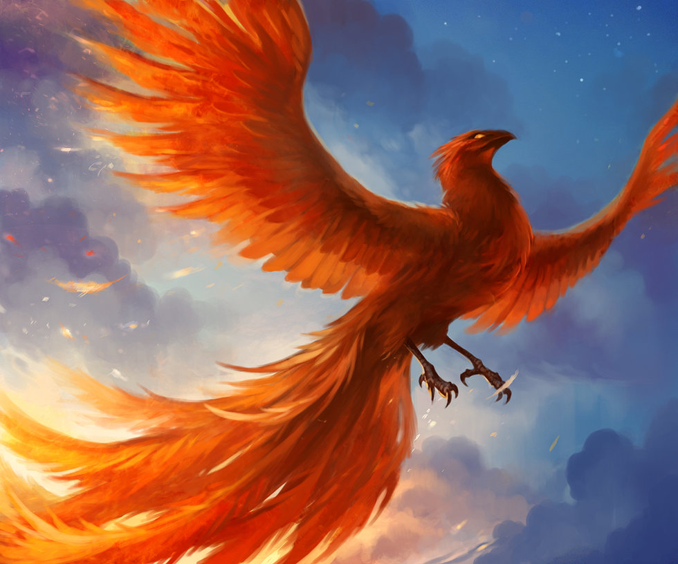

Welcome!
As an epic nerd, I have read many an adventure novel that contains a fascinating creature or ten, and I have often wondered what it would look like if they were real. So I have devoted too much time to categorizing and writing down specifics about numerous magical creatures. Each creature is sorted into catagories such as Humanoids, Fish, Reptiles, etc. I have also logged traits about them such as habitat and language, and physical traits about them such as eyesight and hearing. There is also a blurb describing the creature. If you as a fellow nerd have any suggestions please leave them in the comments at the bottom. Enjoy!
A brief history lesson
Magical creatures have appeared in mythology for thousands of years. If you are not interested in the history of Magical creatures, you can skip this part. Let's jump in.
The greeks wrote incredible works describing fantastic beasts such as the sirens or the minotaur. While these creatures are not always the main focus of the stories, I personally enjoy reading about them. Read more about greek creatures
here.The Egyptions also had very interesting monsters. Take the sphinx for example. A lion with a human head, the guardian of the pyramids. This creature in particular has been used in almost every fantasy story imagiable. To read more about the egyptian mythology click
here.
The chinese had some wonderful dragons in their stories. With twenty or more legs, and the head of a lion, these dragons are truly incredible. Learn more about them
here.
Elves
Elves elected to be considered a separate race in the Magical Creatures Parliament meeting of 2015. Their reasoning was that they did not want to be associated with any species stupid enough to even consider that the movie is better than the book.
Elves are a very smart race, renown for their magic and affinity with animals. They are considered to be some of the best fighters in the world, and their skill with a bow and arrow surpasses any other race. Their population is declining and they rarely like to be seen, but are known to reveal themselves to anyone with a pure heart.

Statistics
- Height: 6-7’
- Habitat: Woods and Forest
- Language: Elvish and English
- Genders: Male and Female
- Lifespan: Up to 2,000 yrs
- Eyesight: 8
- Smell: 5
- Hearing: 8
- Touch: 6
- Extra senses: None
Kelpie
A kelpie appears to be a beautiful black horse. They stand on the shores of a lake and wait for people to come near. Their beauty enchants any helpless wanderer to try to ride them. When someone tries, the Kelpie leaps into the water and drowns the victim before eating them.
Statistics
- Height: 5-6’
- Length: 6’
- Habitat: Lakes
- Language: Unknown
- Genders: Male and Female
- Lifespan: 30 yrs
- Eyesight: 8
- Smell: 10
- Hearing: 8
- Touch: 3
- Extra senses: none
Basilisk
A basilisk is a giant snake born when a chicken egg is hatched beneath a toad. If you look it in the eye, you will die instantly. The only thing they are known to be afraid of is the crow of a rooster, for if they hear it they die.
Statistics

- Height: 20’ when attacking
- Length: 50-60’
- Habitat: Sewers and caves
- Language: Snake
- Genders: male and female
- Lifespan: Until killed
- Eyesight: Unknown
- Smell: 5
- Hearing: 10
- Touch: 2
- Extra senses: Unknown
Kraken
The kraken is an enormous squid that attacks ships. Some say it more resembles an octopus. While it is technically a mollusk not a fish, for simplicity I have classified it as such. It is said that the Kraken is controlled by the merfolk, but they have repeatedly denied this claim.
Statistics
- Height: 15-20’ when on it’s side, 60’’ standing up
- Length: 200’
- Habitat: deep ocean
- Language: unknown
- Genders: unknown
- Lifespan: unknown
- Eyesight: 10
- Smell: 0
- Hearing: 0
- Touch: 10
- Extra senses: unknown
Phoenix
A phoenix is a bird with a long, flowing, tail rather like a peacock’s, except phoenix’s have fire magic. They are able to set fires, and their tears are the most powerful healing agent known to man. When they die they burst into flame, and out of the ashes crawls a phoenix chick, with all of the memories and knowledge of the old one, effectively allowing the phoenix to never die.

Statistics
- Height: 2’
- Length: 3-4’ including tail
- Habitat: Unknown
- Language: Unknown
- Genders: Male and Female
- Lifespan: Unknown
- Eyesight: 9
- Smell: 7
- Hearing: 10
- Touch: 4
- Extra senses: Unknown